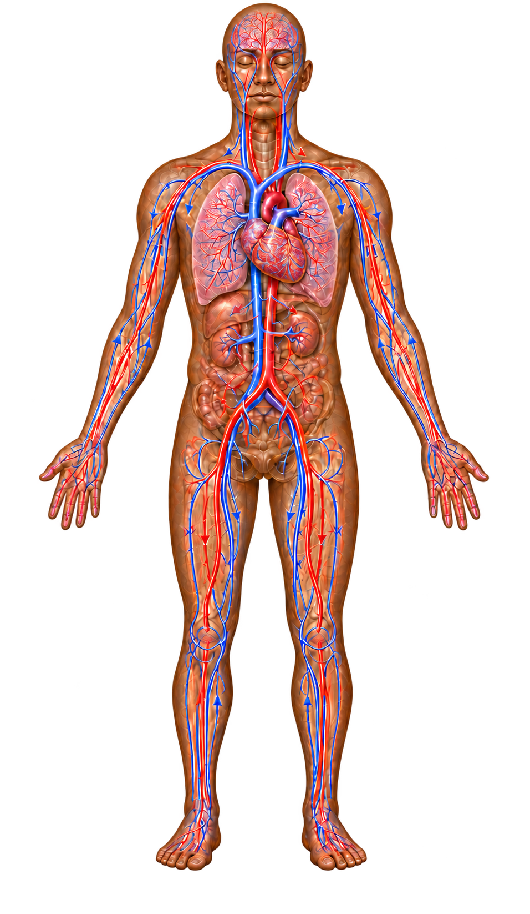

Identity & contact
Your private care space
Your care, made clearer.
See your BHW Health Blueprint, your enrolled programs, clinician-shared body-system pages, medication directions, and care-request status.
Passwordless sign-inPrivate connectionNo staff tools
Your Health Blueprint contains medical guidance shared by your BHW clinician. If your symptoms or circumstances change, contact BHW before changing your care plan. For urgent symptoms, call 911. For a mental health crisis, call or text 988.
Your patient profile
The health information coordinating your care
This is the information currently shared from your BHW record. Contact your care team if something is missing or needs correction.
Medication and nutrition safety
Allergies & intolerances
Allergies
Intolerances
Coordinated care
Specialists
Connected care map
Your connected care map
Your Blueprint changes as you check in, share measurements, and see how your symptoms, interventions, and body systems connect.
Program lensChoose a program
The same body, understood through the care you receive
Switching programs changes the colors, physiological connections, measurements, and interventions—not the person at the center.
BHW·Primary Care·Personal physiology map

System addedDetailed anatomy is being prepared.
CardiovascularHeart & circulation
Shared
Health360 connection
Labs & individualized interpretation
Select a shared result to see how your care team connected it to your Health Blueprint.
Medication Request profile
Medications & request status
Medication status and request status are shown separately, so “sent to pharmacy” never means a medication was approved by insurance.
Main patient profile